I originally flew into Dublin airport, but when I arrived in Ireland I almost immediately boarded a bus for Galway.
I enjoyed the countryside and the opportunity to relax after my flight.
Languages
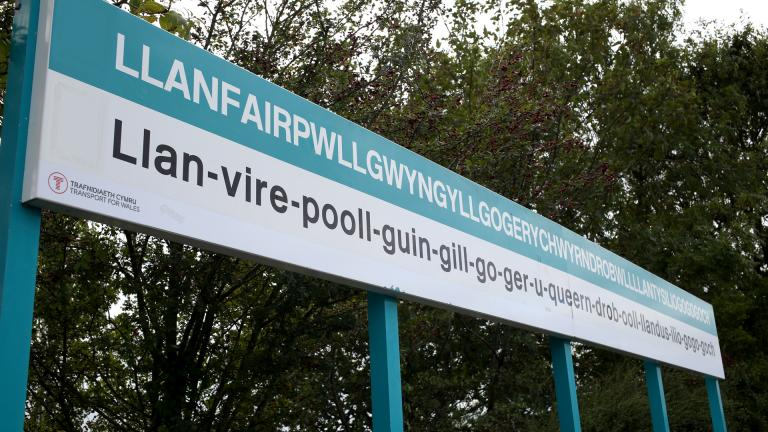
In the Republic of Ireland, Gaelic is very common on all signs, taxis, police vehicles, etc. English was still available, usually written afterward.
Everything was written entirely in English in Northern Ireland and England.
In Wales, signs were written in Welsh first, and then English.
In Scotland, most things were in English but many things had Scots Gaelic written beneath.
Food
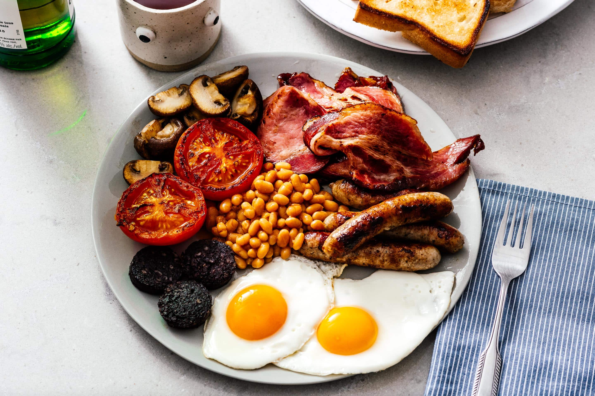
The food was incredibly fresh and tasty throughout the British Isles. Freshness was definitely a main priority for most places I went to.
Portion sizes were small compared to the USA, for both food and drink, but not so much that it left you hungry.
Transportation
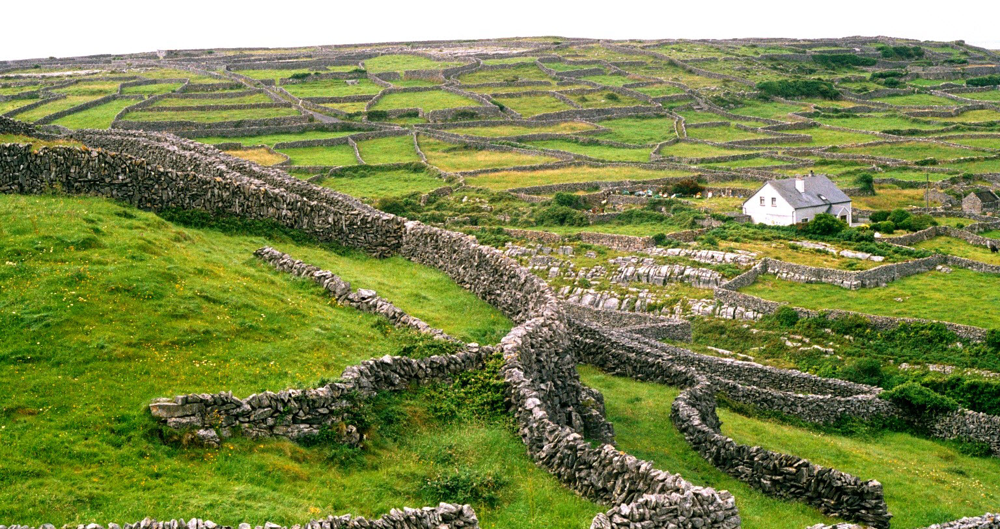
Overseas I found the trains to be generally very efficient and timely. The people were very friendly and services ran a lot more smoothly than they do here, whether public services (free internet was availble at a surprisingly high number of places, faster than some of the internet services I've paid good money for here, as an example)
The ride from Dublin the Galway was beautiful, showcasing beautiful cottages, castles, and landscapes. I highly recommend taking a bus ride from Dublin to Galway.
Ireland
Pubs
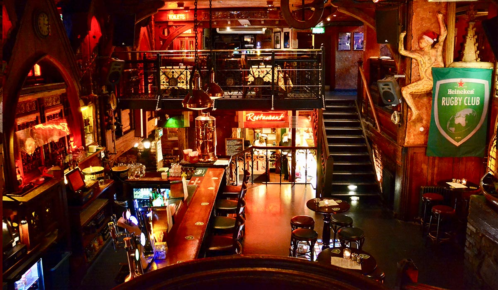
Being so far from home was fairly new to me, and when I heard an American accent in the crowd at a pub I ended up striking up a conversation with a young couple on vacation.
Throughout my stay in Galway, the couple and I ended up having a lot of fun crawling pubs.
Pubs were also a big part of my morning routine. There was a lovely pub (pictured, above) called the Quays that served the most delicious Irish stew, along with fresh seafood that was caught fresh that morning.
Tours
Out of Dublin, Ireland
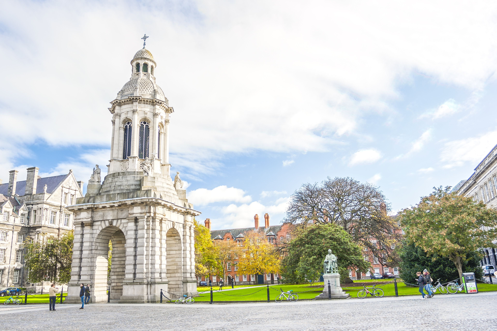
Trinity Library was beautiful to visit, the architecture is amazing. I loved the library, I wish I had one like it.
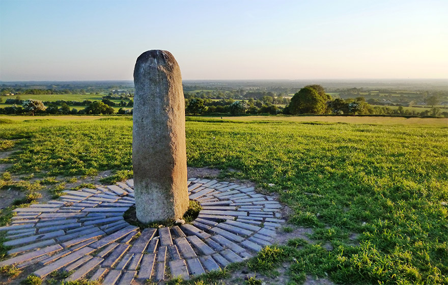
The hill of Tara was for many years where the high kings of Ireland were crowned. The iconic view was one reason they believe the spot was chosen. You can see a large portion of Ireland from the spot. The standing stone, called 'The Stone of Destiny' was the place high kings ascended to the throne, for centuries.
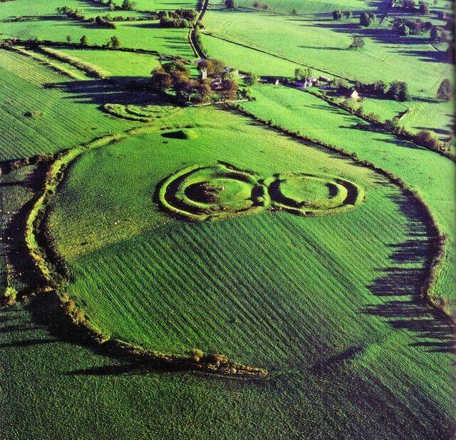
While I was on a tour of Tara, a woman tripped and fell and broke her leg. After that happened, I mostly remembered that part. But Tara itself was very beautiful.
Out of Galway, Ireland
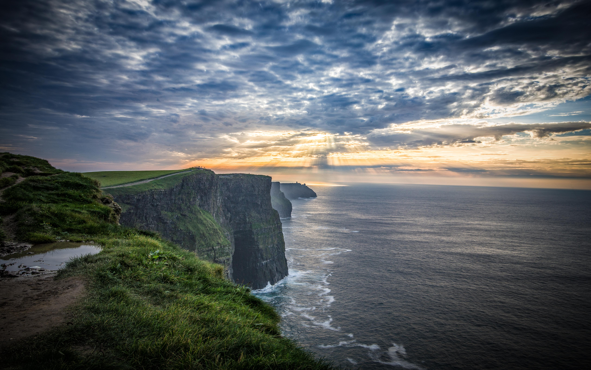
The cliffs of Moher are beautiful, and slightly scary. It was very windy the day I went, with sudden gusts that kind of pushed you around a little.
The view was amazing, and they had a lovely historical tour as well. They had an extensive gift shop and a food court area that served some lovely ice cream.
Historical Sites
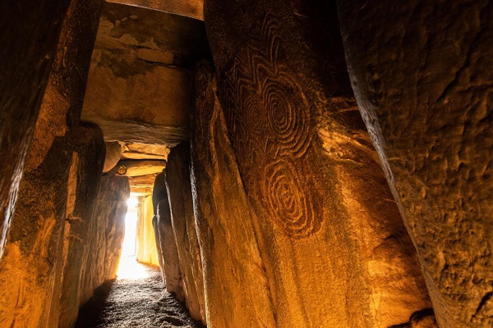
I had the privilege to see some of mankind's earliest art at newgrange. It's a passage tomb sacred to neolithic druids.
The tomb was built in a way that the inside gets illuminated on the winter solstice.
Victorian Graffiti
When I was there, I was astonished to see Victorian age graffiti defacing the neolithic artwork. (Think "Jeremiah was here")
Best Burgers Ever
SuperMacs
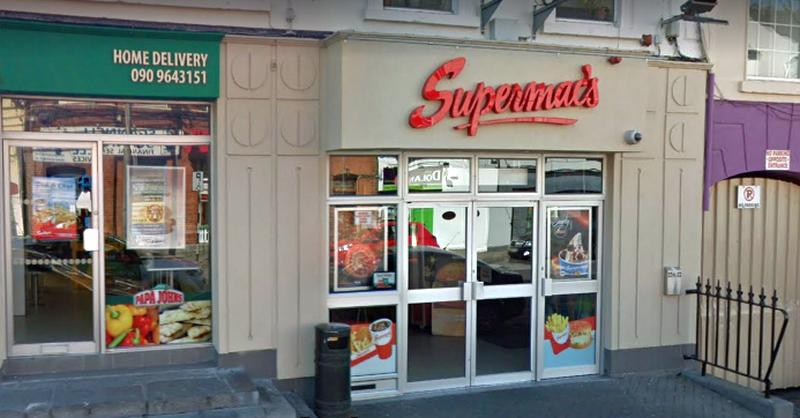
One of the things I miss most about Ireland to this day is a restaurant there that hasn't made it out of Ireland yet, sadly. Supermacs has a very delicious and extremely addictive burger sauce that I still crave.
I hope to bring my fiance (because he is a trained chef) to Ireland someday so that he can reverse engineer this sauce for our personal use.
Wildlife
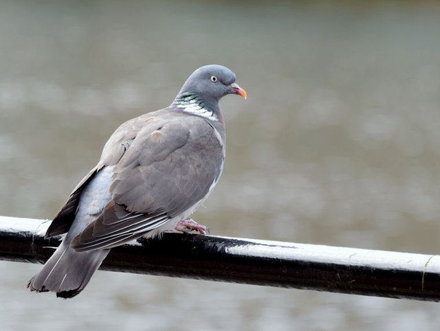
Fauna Count:
⤷Pigeon Count: 10
⤷Seagull Count: 4
⤷Dinners Lost to Local Fauna: 0
Northern Ireland
Tours
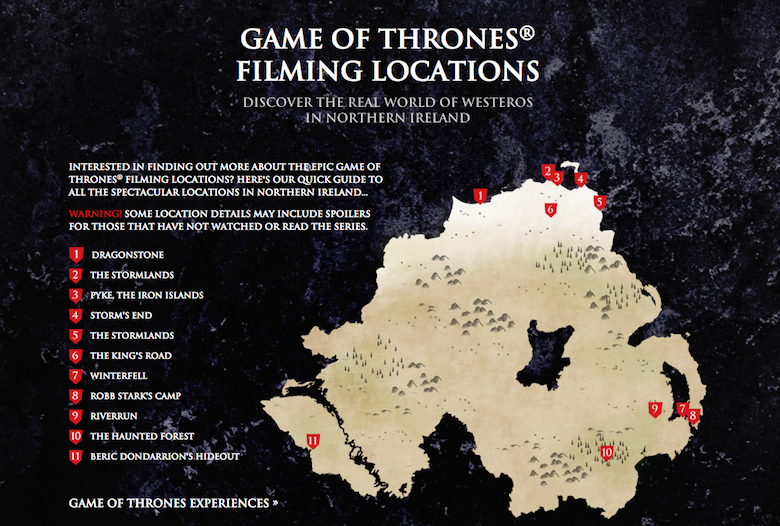
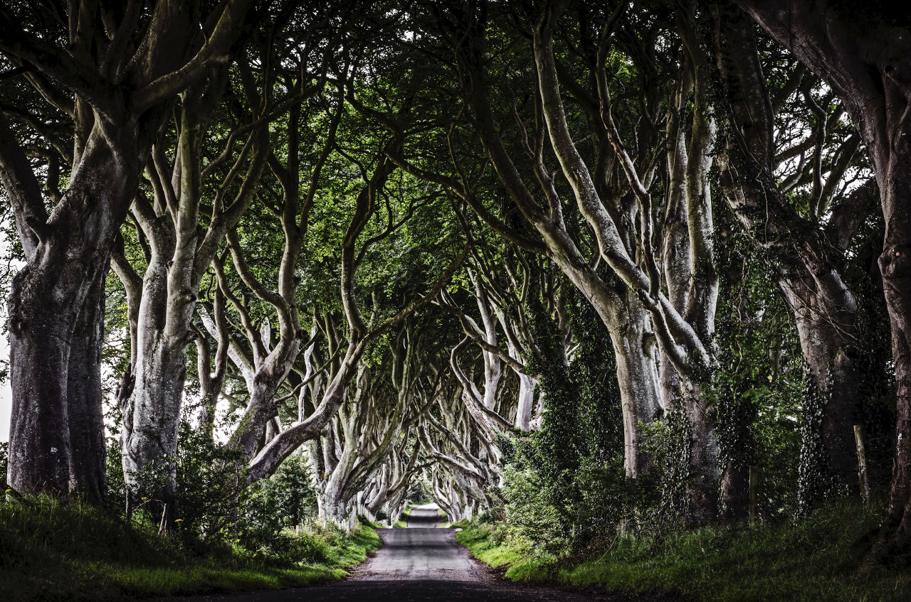
Another really fun thing I did while I was in Northern Ireland was taking a Game of Thrones Horseback Riding Tour
There were a lot of fun things I did on these trips, but I did really particularly enjoy this tour. I love horseback riding, and as a fan it was really fun to see my favorite places in the show.
Wales
Train Ride
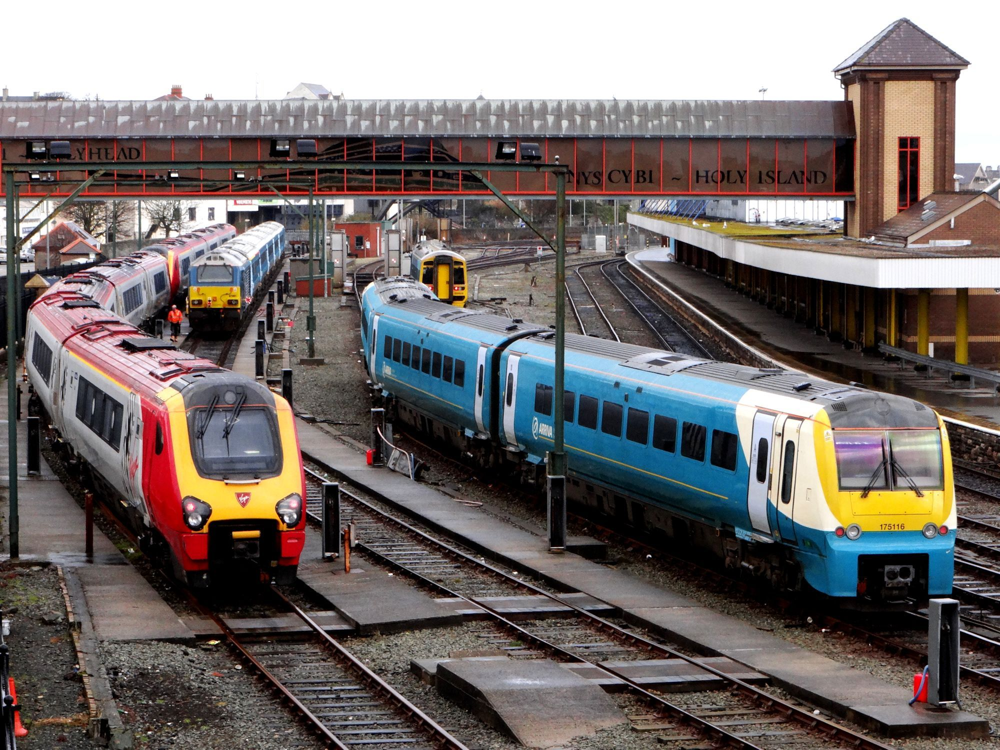
One of the main unpleasant experiences I had was on a train from England to Wales during the last portion of my trip. It ended well, though.
A man on the train was very beligerantly drunk, and was harassing people. One of the other passengers stood up for the women he was harassing, and it ended up being actually pretty funny.
Wildlife
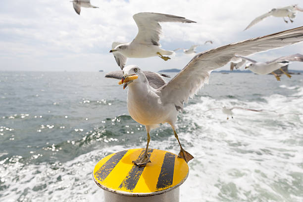
⤷Pigeon Count: 12
⤷Seagull Count: 10
⤷Dinners Lost to Local Fauna: 1, voluntarily due to cuteness:
England
Not gonna lie, I didn't do a single thing of note in England, it rained and I was super tired from all my pub hopping in Ireland
I literally ordered grubhub and then slept, for like a week.
I enjoyed this tour most of all, out of all the things I did and the countries I visited. The wonderful people, the beautiful sunsets on the beach, horseback riding on the sand...
I took lessons in English style riding for months in anticipation since the stable didn't offer Western saddles, and it was worth it.
Wildlife
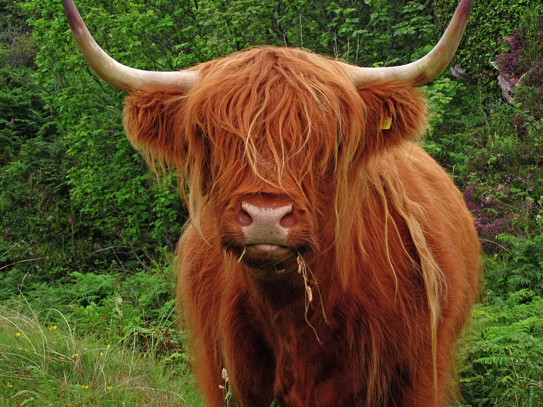
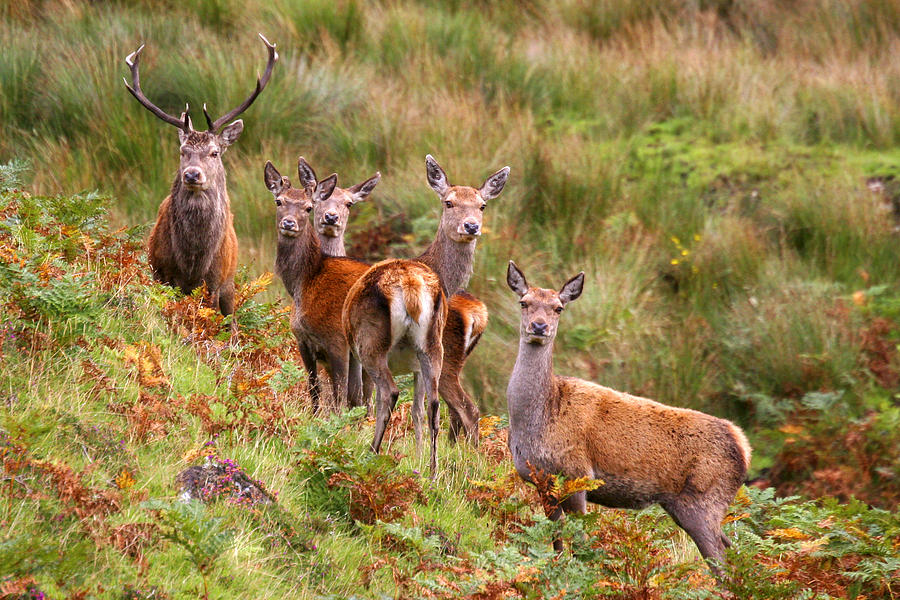
Train Ride to Tain and Inverness
A machine ate my money in Edinburgh (roughly €350, or $450 at the time ) , so they called a repairman on the spot to open up the machine and get my money out, then issued me tickets manually.
I ended up being several hours late to my horseback riding tour on the beach of Tain due to the delay related to my money beinig eaten by the machine, and as I got there they were just about to close.
They kindly stayed late and took me on a private ride on the beach. It was beautiful, and I ended up seeing Red Deer and Roe Deer as well.
Fauna Count:
⤷ Seagulls: 17
⤷ Pigeons: 13
⤷ Magpies: 2
⤷ Red Deer: 1
⤷ Roe Deer: 3
Thanks for viewing my website!
I appreciate taking the time to read about my trip. In thanks, please accept this video of a cute puppy